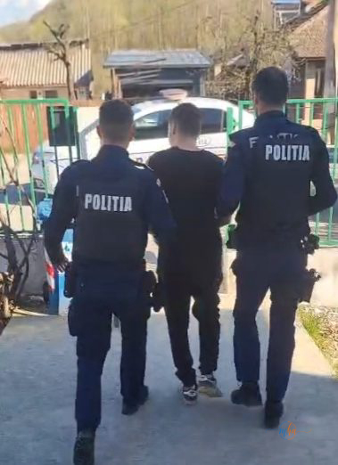

📍 Locul faptei: DC 29, comuna Balta
👤 Bănuitul: bărbat, 20 de ani, din comuna Balta
⚠ Infracțiunea: conducerea unui vehicul cu dreptul de a conduce suspendat (din 12.03.2026)
🔒 Măsura: reținut 24 de ore, urmează prezentarea în fața magistraților
Luni, 6 aprilie 2026, la ora 16:45, polițiștii din cadrul Secției de Poliție Rurală Baia de Aramă au reținut pentru 24 de ore un tânăr de 20 de ani din comuna Balta, bănuit de conducerea unui autovehicul fără a deține dreptul legal de a face acest lucru.

Permisul, suspendat din 12 martie — ignorat complet
Din probatoriul administrat în cauză, sub coordonarea procurorului de caz, a reieșit că bănuitul ar fi condus un autoturism pe DC 29, pe raza comunei Balta, deși exercitarea dreptului de a conduce vehicule pe drumurile publice îi fusese suspendată de la data de 12 martie 2026 — cu aproape o lună înainte de producerea faptei.
Cu alte cuvinte, tânărul cunoștea situația juridică a permisului său și a ales să ignore interdicția, expunând atât propria persoană, cât și ceilalți participanți la trafic unui risc nejustificat. Conduita rutieră iresponsabilă a atras imediat atenția polițiștilor aflați în teren, care au acționat prompt.
Reținut 24 de ore — urmează magistrații
Bărbatul a fost introdus în arestul Inspectoratului de Poliție Județean Mehedinți și urmează să fie prezentat magistraților cu propunerea unei alte măsuri preventive. Fapta sa se încadrează în prevederile Codului Penal privind conducerea unui vehicul fără drept — o infracțiune care poate atrage pedepse privative de libertate.
Conducerea unui autovehicul cu permisul suspendat constituie infracțiune și nu contravențe. Polițiștii mehedințeni acționează ferm pentru sancționarea celor care ignoră restricțiile legale în trafic.
Cazul din Balta vine la scurt timp după o serie de acțiuni ale polițiștilor mehedințeni în zona Baia de Aramă, demonstrând că supravegherea traficului rutier în mediul rural este o prioritate constantă pentru IPJ Mehedinți.
Sursa: Inspectoratul de Poliție Județean Mehedinți